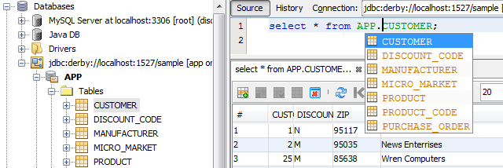

Bancos de Dados

Clique na imagem para exibição em tela inteira
{kind=link}
O NetBeans IDE oferece drivers para os servidores de banco de dados Java DB, MySQL, Oracle e PostgreSQL, tornando fácil a conexão com esses bancos de dados. Você também pode registrar qualquer outro driver JDBC no IDE, de modo que possa explorar qualquer banco de dados que ofereça um driver JDBC.
Database Explorer
O Database Explorer permite a conexão com bancos de dados e exibição de seu conteúdo.
Você pode criar, modificar e deletar tabelas, colunas e índices em seu bancos de dados diretamente do IDE.
Conectando o Oracle DatabaseConectando o JavaDB Database
Conectando o MySQL Database
Editor SQL
O SQL Editor ajuda a exibir e alterar dados nos seus bancos de dados. Você pode abrir, editar e executar qualquer script SQL no Editor SQL.
O editor tem funcionalidades avançadas, como recurso de autocompletar de código e sintaxe em cores para ajudar você a escrever scripts de forma rápida e correta.
O editor é personalizável e você pode estendê-lo com novas funcionalidades por meio de plug-ins.

Geração de Cliente Baseada em Assistente
Utilize o gerador de aplicações em JSF CRUD (Create/Read/Update/Delete) para criar uma página JSF completa e funcional para manipular dados de um banco de dados.
O assistente "Classes de Entidade do Banco de Dados" e o assistente "Web Services do RESTful do Banco de Dados" podem gerar rapidamente aplicações complexas de bancos de dados registrados no IDE. Da mesma forma, você pode gerar um JavaScript diante de um web service RESTful, de forma que seja possível expor facilmente os bancos de dados na aplicação em HTML5.
Utilize as paletas personalizadas de componente JSF e HTML para arrastar e soltar forms JSF e HTML em páginas Web e gere tabelas de dados JSF de entidades.
Consulte Também
- Página da Release NetBeans IDE 8.1 para obter uma lista de funcionalidades realçadas na última versão estável.
- Trilha de Aprendizado em Desenvolvimento Geral de Java para tutoriais que o ajudarão a começar.